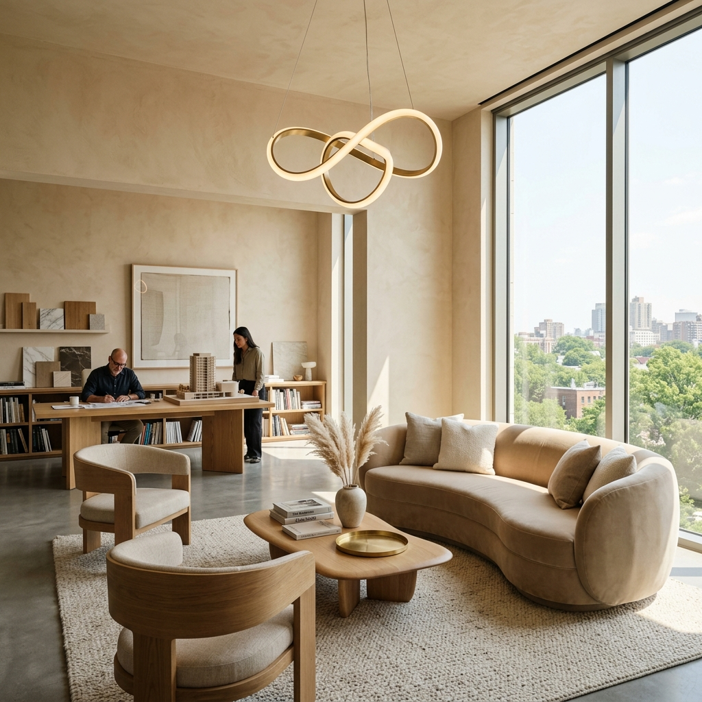
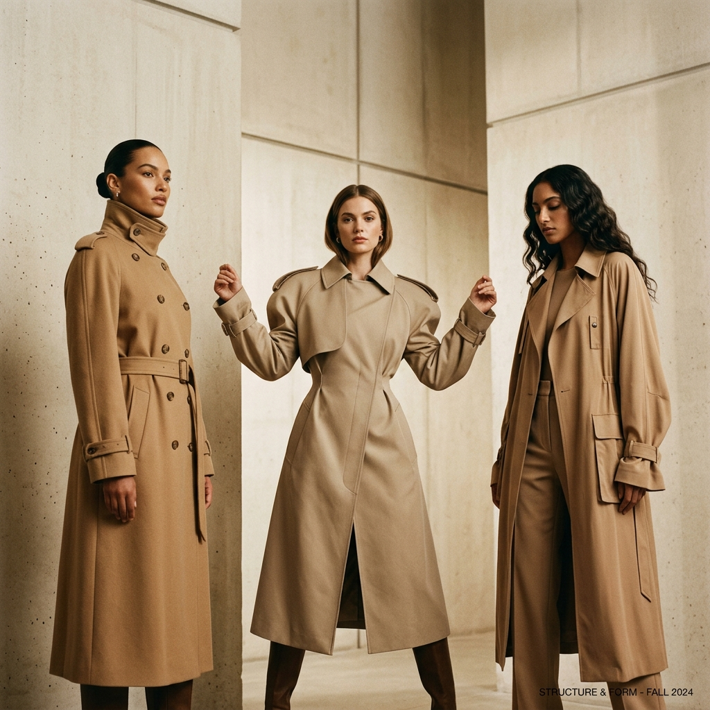
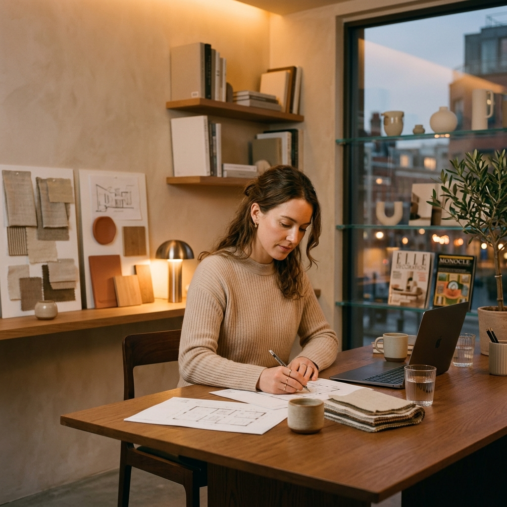

01 / ARCHITECTURE
Architectural & Spatial Planning
From private residential sanctuaries to cultural landmarks, we create tailored structural solutions that interact thoughtfully with their natural topographies.
Read Details →
URTH is an international architecture and design studio crafting timeless spaces where light, natural materials, and human emotion connect seamlessly.
"We believe that thoughtful architecture has the power to transform how people experience the world, bringing harmony between built environments and natural landscapes."
Founded on the principles of organic minimalism and spatial purity, our studio brings together architects, interior stylists, and material researchers dedicated to creating environments that inspire tranquility and enduring beauty.


Every project begins with a deep listening process—understanding the unique topography, climate, culture, and personal ritual of the inhabitants.
By employing raw limestone, oiled timber, hand-burnished plaster, and natural daylighting strategies, we construct spaces that feel grounded in history yet contemporary in form.
Discover Our Work
TRUSTED BY LEADING BRANDS & FEATURED IN TOP PUBLICATIONS

We bridge visionary concept design with meticulous technical execution. Every corner, shadow gap, and material transition is calculated to create emotional resonance.
Utilizing natural ventilation, renewable timber, and low-embodied carbon concrete solutions.
Collaborating with master artisans to custom-fabricate joinery, stone, and bespoke metalwork.
From private residential sanctuaries to cultural landmarks, we create tailored structural solutions that interact thoughtfully with their natural topographies.
Read Details →
Curating atmospheric, tactile interiors using custom lighting, natural textiles, and bespoke furniture handcrafted specifically for each space.
Read Details →
Pioneering low-energy building envelopes, rainwater harvesting, passive solar orientation, and bio-based building materials.
Read Details →
Harmonizing exterior landscaping with interior architecture to foster biodiversity, seamless indoor-outdoor living, and community connection.
Read Details →We prioritize organic minimalism, material authenticity, and light-driven spatial orientation. Every project is crafted to embody warmth, calm, and connection with nature.
Yes. URTH operates worldwide with projects across Europe, North America, and Asia. We partner with vetted regional contractors to ensure local code compliance and flawless execution.
Our comprehensive services encompass feasibility studies, architectural design, interior styling, custom furniture design, construction documentation, and full site administration.
We integrate passive solar heating, natural cross-ventilation, high-performance thermal insulation, low-VOC finishes, and responsibly sourced local stone and timber into every build.
Design development typically spans 3 to 6 months depending on scale. Construction timelines range from 12 to 24 months for high-end residential and commercial developments.